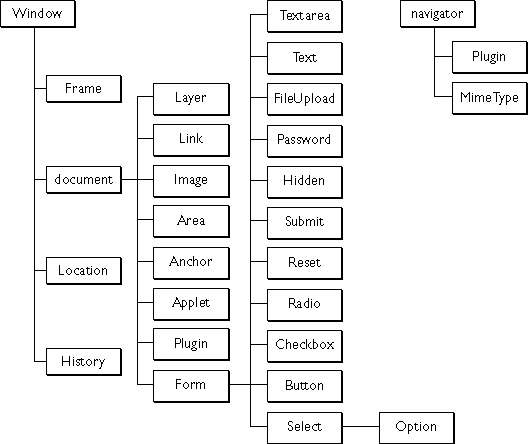

物件 (Object)
· 物件 · 物件的表示方式 · 方法�c�傩� |
大家在第一篇中的 Hello, World 例子中初次接�|到 document 物件， 但物件是什�N呢？
JavaScript 是物件��向程式�Z言， �����碚f即是�g�[器�鹊娜魏��|西都��作物件， 而每��物件又可能包含 (contain) 其它物件。 大家可以用十秒�r�g想一想你的�g�[器�扔行┦颤N�|西， 如果想到的��可以再想想�@些�|西又包含了什�N其它的�|西。
�榱俗�大家清楚 JavaScript 的物件架��， 在�@一���任������σ韵��D片�碚f明物件：

�D一： JavaScript 物件�哟��D (JavaScript Object Hierarchy)
�碓矗� Netscape JavaScript Reference
�D一是 Netscape �W站�纫环� JavaScript 的物件�哟��D， 每���L方形代表一��物件， �L方形�鹊奈淖直硎驹�物件的名�Q (Name)， �B�M�L方形的��表示了物件�c物件之�g的�哟侮P�S。
最高�哟蔚奈锛�有����： window 和 navigator 。 我��首先看看 window ，它包含了 document 物件， 即是�f window 是 document 的包含者 (Container)， 再看看document ， 它包含了 Form 物件， 即是�f document 是 Form 的包含者。
�F在知道哪��物件包含哪��物件， 那�N如何表示它��呢？
想表示某��物件， 主要步�E有三��：
1 第一步： 找出��物件的名�Q， 名�Q是很重要的。
要找出一��物件的名�Q， 主要有����步�E：
找出��物件的 HTML �擞��Y name �傩缘闹担� 而�@��值就是��物件的名�Q了。 例如有一��表�危� 它的 HTML �a如下： |
�@��表��物件的名�Q就是 my_form ， 而表���鹊�文字��入物件的名�Q就是 my_name 了。
1 如果那��物件是唯一的 (Unique)， 而且它根本�]有 HTML �擞�， 那就用��物件在�D一的名�Q。 例如 document ， 因�橐����g�[器��窗或窗柜只能有一��， 所以 document 是唯一的， 我��就用 document 作�� document 物件的名�Q。 例如 navigator (�g�[器物件)， 一���g�[器��窗只能�凫对����g�[器， 因此我��就用 navigator 作�� netvigator 物件的名�Q。
2 第二步： 找出��物件的所有包含者名�Q
只要�⒖��D一， 便很易找出某��物件的包含者名�Q。 在某些情�r下， 你�o��找出某些包含者的名�Q， 例如在某一���鹊� JavaScript 想使用����的物件， 你就不��要找出那一��所在的��窗或窗柜物件的名�Q， 但如果你想在某��使用另一����窗或窗柜物件， 那找必��找出那��物件的名�Q了。
3 第三步： 在物件和它的所有必��的包含者之�g用一�c (.) �B��起��
�@步更加容易， 例如你想表示文字��入物件， 名�Q是 my_name ， 它是在一��表���龋� 名�Q是 my_form ， 我假�O使用�@��物件的 JavaScript �c�@��物件的 HTML �a是在同一��， 因此我不��要找出��窗的名字。 表示方式如下：
document.my_form.myname |
大家可能����， 既然它��是在同一��， 那�N document 也不��要��吧， 只是�� my_form.myname 不就行了�幔� 理��上好像是�Φ模� 我在 IE 和 Opera �y���^�@�N��法， 它��也支援， 但不知何解 Netscape ���a生�e�`， 所以�@�Y建�h大家不要漏去 document ， 如果你怕打太多字也不用��心， 之後的篇章��教大家如何�\用���担� 令自己不用打�@�N多字。
相信大家已��有了物件的概念了， 但有了一��物件， 可以做些什�N呢？ 答： 就是�\用它的方法和�傩�了：
· 方法 (Method)：
用�碜鲆恍┡c��物件有�P的�幼鳎� 例如 document.write() ，write 是 document 的方法， 所以�@一句��在 document ��入一些�|西。
表示方式：
Object_name.method()
方法必��有左括��和右括�� ()， 而括���仁怯��磔�入���档摹� ��方法�]有�����r， 也��在尾部加入括��， 以表示它是一��方法， 而括���炔挥���任何�|西。
其��方法就好像一��函�� (Function)， 不同之��在於方法是�B�M著物件的。 函����在之後的篇章��述。
· �傩� (Property)：
用�砣〉迷�物件的�傩曰蛸Y��， 也可以�O定某些�傩缘��热荨� 例如 document.bgColor ，bgColor 是 document 的�傩裕� 所以�@一句的�热菥褪窃���document 的背景��色， 你也可以�O定它的�热��砀淖�背景��色，例如 document.bgColor="silver" ，�@句��把����的背景��色�D�殂y色。
表示方式：
Object_name.property
其���傩�就好像一������ (Variable)， 不同之��在於�傩�是�B�M著物件的。 ������在之後的篇章��述。
�F在大家������方法和�傩�有初步的概念了， ��我介�B一下常用 document 的方法和�傩�吧：
Document 物件 | |
方法 | �傩� |
write() | bgColor |
writeln() | fgColor |
| title |
| lastModified |
| URL |
· writeln() 和 write() 的功能一�樱� 唯一不同的地方就是 write() ��在句尾加入�嘈蟹��� (Carrier Return)， 目的是使��出�淼��|西在普通文字����器中 (如 Notepad) 易於���x， 也方便列印。 但在��幕上的效果基本上是一�拥模� 因�� HTML 格式�鹊��嘈蟹���一般��被忽略。
例子： document 的�傩裕�
<html> |
程式�f明：
"The URL of this document is : " + document.URL + "<br>"
�@是 write 的一�����担� 而�@�����凳且���字串， 它有三��部份， 分�e是 "The URL of this document is : " , document.URL 和 "<br>" ， 它��之�g都有��加�� (+)， 是用���⒛侨���部份�M合成一��更�L的字串， 然後�@��字串就作�� write 的���盗恕�
document.URL 不用�p引��括著，因�槲���要�@示 document.URL 的�热荩� 而不是一�� document.URL 字串。
document.write("The background color is " + document.bgColor |
��你�l�X一句字串太�L�r， 可以��在下一行， 而分割的位置可以在加��的左右， 分割其它位置可能��造成�e�`。
document.fgColor = "gold" 和 document.bgColor = "black"
�@�删����⒈尘邦�色�D成黑色， �⑽淖诸�色�D成金色。 想改��物件�傩缘��热荩� 只��把它��作���担� 再用等�� (=) 指定它的�热荼憧伞�
转载于：http://taiwantc.com/js/js_tut_a0.htm